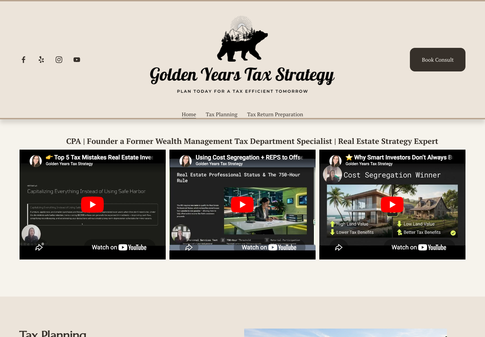
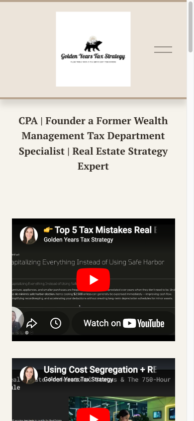

Visit site
Visit site
SEO/AIO · audience clarity · conversion path
Make specialized expertise easier to find, understand, and act on.
Golden Years Tax Strategy had strong expertise and a focused niche. The engagement turned that expertise into a clearer search presentation, a more coherent client path, and a measured story about what changed.
At a glance
A sharper path for a founder-led CPA practice.
One focused engagement connected audience positioning, search language, common questions, calls to action, and the practical decisions behind a safe site handoff.
California-focused CPA practice serving real-estate investors, short-term-rental owners, high-income W-2 earners, and business owners.
Audience, metadata, headings, content structure, common questions, consultation path, and modest cosmetic improvements.
A focused planning-first presentation that routes qualified visitors to one calendar-based consultation destination.
The story
The expertise was there. The digital path needed to catch up.
Search language described a generic San Diego CPA, the homepage lacked a clear H1, booking labels and destinations were inconsistent, and prospective clients had to work too hard to understand the practice's priority audiences.
Before
- 01 Generic metadata and unclear search positioning
- 02 No clear homepage H1 or consistent audience hierarchy
- 03 Booking labels and destinations needed alignment
- 04 Common client questions were not organized for quick answers
After
- 01 Planning-first language makes the priority audiences explicit
- 02 Headings, content structure, and calls to action reinforce one path
- 03 Common questions answer fit and timing concerns before a call
- 04 A controlled implementation and handoff keep claims and approvals visible
The work
From ambiguous positioning to an owner-approved client path.
The paid work stayed focused on SEO/AIO and clarity. Broader redesign, hosting, and migration work remains supporting capability rather than the purchased outcome.
Capture the real audience
Clarify who the practice serves, how the owner describes the offer, which contact policy is approved, and what a qualified visitor should do next.
Shape search and answers
Audit titles, descriptions, headings, URLs, content structure, common questions, calls to action, and crawler or answer-engine readiness.
Make the path coherent
Replace generic language, align headings and booking destinations, add qualification guidance, and make modest visual adjustments where they improve comprehension.
Leave a defensible record
Keep before-and-after evidence, policy links, responsive behavior, production checks, migration notes, and rollback context together for review.
The evidence
A promising signal, presented without overclaiming.
The hosting and analytics platform changed on June 1, so these figures show context and direction rather than a clean before-and-after percentage lift.
204 pageviews in the last complete pre-cutover month.
390 pageviews and 1,500 ms average page-load time with bots excluded.
Different platforms and a hosting change mean the counts must not be presented as a percentage lift.
Owner-reported signal
Magali reports that prospective contacts have begun saying they found Golden Years through Google, which she says did not happen before the website work. She was not running paid advertising and otherwise relies on word of mouth and referrals.
This is first-party directional evidence, not a lead count, conversion result, ranking claim, revenue claim, or causal attribution.Selected visual evidence
Clarity is visible in the path, not just the copy.
These review-approved visuals show the shift from the original homepage presentation to a more coherent, planning-first path. They are included for review only.



Approved proof components
Ready for review, with the evidence boundaries intact.
The owner approval covers the business name, logo, selected visuals, supported outcome language, testimonial attribution, and referral use. This preview uses the first four without creating words in the owner's voice.
Name, logo, selected visuals
Golden Years is named, the public logo is used, and the before/after assets are presented as review-approved visual evidence.
Supported outcome language
The Google-sourced prospect signal and platform-change context are included with the caveats that keep them factual.
Direct testimonial quote
Attribution is approved, but no exact quote was supplied in the current source record. This preview does not write one in Magali's voice.
A reusable engagement pattern
When the expertise is stronger than the website, start with clarity.
Web By Elie helps founder-led and specialist firms turn ambiguous positioning into an owner-approved search and consultation path.